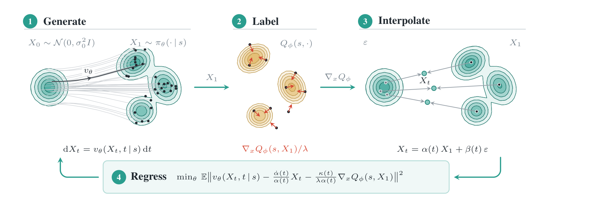
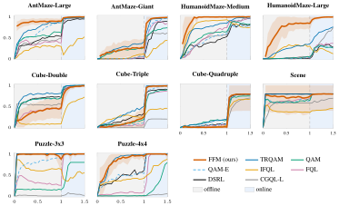

Reinforcement Learning via
Fixed-point Flow Matching
In maximum-entropy and behaviour-constrained RL the optimal policy is a Boltzmann distribution. Flow policies trained with flow matching can represent such complex, multimodal distributions, but flow matching needs samples from the distribution it is fitting, and in RL there are none. Fixed-point flow matching (FFM) is a data-free procedure for training and fine-tuning flow policies in RL: it keeps the simple flow-matching regression and replaces the data-derived target with one read off the critic.
Method

The construction rests on the target flow identity: for a Boltzmann target, the velocity field that generates the noised target is, up to a rescaling of the noisy action, a conditional average of the critic's action gradients at clean actions. Evaluating that regression with samples from the current policy and iterating gives FFM. The update requires neither backpropagation through the integrator nor importance weights nor conversion of the flow into a diffusion model. In the offline-to-online setting a path-space KL trust region keeps the fine-tuned policy close to the pretrained reference policy, with the multiplier set by projected dual descent on a KL budget.
Learned policies
One successful offline-to-online rollout per OGBench domain, from the final 1.5M-step checkpoint. Videos loop; hover for controls.
Offline-to-online results on OGBench
FFM fine-tunes a BC-pretrained flow policy for 1M offline steps and then 500K online environment steps, against seven baselines under an identical protocol.

FFM reaches the best average success after online fine-tuning (0.95 vs. 0.93 for the next-best method) and is the only method at or near the top on every locomotion domain. The paper additionally shows that the same update trains flow policies from scratch in online RL on the DeepMind Control suite.
Paper
The paper is under review. A link to the manuscript will appear here when it is public.
Code
The full method is a single file, agents/ffm.py, with scripts that reproduce every
result above from the per-domain recipe. A link to the repository will appear here when it is public.